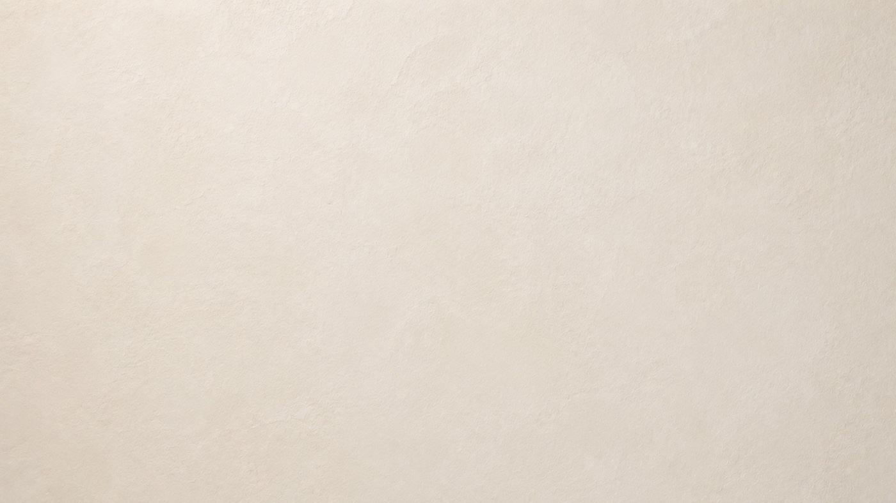

La historia del chukum
Sesenta y seis millones de años entre un impacto y un muro. Deslizá para recorrerlos.
01 — Antes de todo
02 — El impacto
03 — La huella

La verdadera arquitectura no se mide por cómo luce el primer día. Se mide por cómo resiste el paso del tiempo.
Se construyen para permanecer.